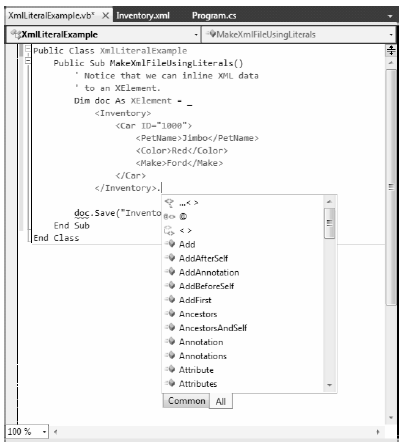

When the .NET platform was first introduced, programmers were able to manipulate XML documents using the types within the System.Xml.dll assembly. Using the contained namespaces and types, you were able to generate XML data in memory and save it to disk storage. As well, the System.Xml.dll assembly provided types allowing you to load XML documents into memory, search an XML document for specific nodes, validate a document against a given schema, and other common programming tasks.
While this original library has been used successfully in many .NET projects, working with these types was a tad bit cumbersome (to put it politely), as the programming model bore no relationship to the structure of the XML document itself. For example, assume you needed to build an XML file in memory and save it to the file system. If you were to use the types of System.Xml.dll, you might author code like the following (if you want to follow along, create a new Console Application project named LinqToXmlFirstLook, and import the System.Xml namespace):
private static void BuildXmlDocWithDOM() { // Make a new XML document in memory. XmlDocument doc = new XmlDocument(); // Fill this document with a root element // named <Inventory>. XmlElement inventory = doc.CreateElement("Inventory"); // Now, make a sub element named <Car> with // an ID attribute. XmlElement car = doc.CreateElement("Car"); car.SetAttribute("ID", "1000"); // Build the data within the <Car> element. XmlElement name = doc.CreateElement("PetName"); name.InnerText = "Jimbo"; XmlElement color = doc.CreateElement("Color"); color.InnerText = "Red"; XmlElement make = doc.CreateElement("Make"); make.InnerText = "Ford"; // Add <PetName>, <Color> and <Make> to the <Car> // element. car.AppendChild(name); car.AppendChild(color); car.AppendChild(make); // Add the <Car> element to the <Inventory> element. inventory.AppendChild(car); // Insert the complete XML into the XmlDocument object, // and save to file. doc.AppendChild(inventory); doc.Save("Inventory.xml"); }
If you were to call this method, you could be able to see that the Inventory.xml file (located in the bin\Debug folder) contains the following data:
CODE GOES HERE
<Inventory> <Car ID="1000"> <PetName>Jimbo</PetName> <Color>Red</Color> <Make>Ford</Make> </Car> </Inventory>
While this method works as expected, a few observations are in order. First, the programming model of System.Xml.dll is Microsoft’s implementation of the W3C Document Object Model (DOM) specification. Under this model, an XML document is created from the bottom up. First you create a document, then you create sub-elements, and finally you add the elements to the document. To account for this in code, you need to author quite a bit of function calls off the XmlDocument, and XmlElement classes (among others).
For this example, it took 16 lines of code (not including code comments) to build even this very simple XML document. If you needed to build a more complex document with the System.Xml.dll assembly, you could end up with a great deal of code. While you could certainly streamline this code, by building nodes via various looping or decision constructs, the fact remains that the body of code has little visual indicators regarding the final XML tree.
The LINQ to XML API is an alternative manner to create, manipulate, and query XML documents, which uses a much more functional approach than the System.Xml DOM model. Rather than building an XML document by assembling elements individually and updating the XML tree through a set of function calls, you can author top-down code such as the following:
private static void BuildXmlDocWithLINQToXml() { // Create a XML document in a more 'functional' manner. XElement doc = new XElement("Inventory", new XElement("Car", new XAttribute("ID", "1000"), new XElement("PetName", "Jimbo"), new XElement("Color", "Red"), new XElement("Make", "Ford") ) ); // Save to file. doc.Save("InventoryWithLINQ.xml"); }
Here, you are using a new set of types from the System.Xml.Linq namespace, specifically XElement and XAttribute. If you were to call this method, you will find the same XML data has been created, this time with much less fuss and bother. Notice how, through some careful indentation, your source code has the same overall structure of the resulting XML document. This is very useful in and of itself, but also notice that you have a much smaller body of code than the previous example (based on how you space your code, you saved about 10 lines!)
Here, you have not made use of any LINQ query expressions, but have simply used the types of the System.Xml.Linq namespace to generate an in-memory XML document which is then saved to file. Effectively, you have used LINQ to XML as a better DOM. As you will see later in this chapter, the classes of System.Xml.Linq are LINQ-aware, and can be the target for the same sort of LINQ queries you learned about in Chapter 13.
As you learn more about LINQ to XML, you will most likely find it much easier to work with than the initial XML libraries of .NET. However, this is not to say you will never use the namespaces of the original System.Xml.dll library. But chances are the times you will opt to use System.Xml.dll for new projects will be significantly reduced.
Before you begin your formal examination into LINQ to XML as seen through C#, I do want to briefly mention that the Visual Basic language takes the functional approach of this API to the next level. In VB, you can define XML literals, which allow you to assign an XElement to a stream of inline XML markup, directly in code. Assuming you had a VB project, you could build the following method:
Public Class XmlLiteralExample Public Sub MakeXmlFileUsingLiterals() ' Notice that we can inline XML data ' to an XElement. Dim doc As XElement = _ <Inventory> <Car ID="1000"> <PetName>Jimbo</PetName> <Color>Red</Color> <Make>Ford</Make> </Car> </Inventory> ' Save to file. doc.Save("InventoryVBStyle.xml") End Sub End Class
Once the VB compiler processes the XML literal, it will map the XML data into the correct underlying LINQ to XML object model. In fact, when you are working with LINQ to XML within a VB project, the IDE already understands that your XML literal syntax is just a shorthand notation for the related code. In Figure 24-1, notice how you can apply the dot operator to the </Inventory> end tag and see the same members as you would find if you apply the dot operator to a strongly typed XElement.
Figure 24-1 VB XML literal syntax is a shorthand notation for working with the LINQ to XML object model
Although this book is about the C# programming language, few developers can argue that VB’s XML support is quite awesome. Even if you are the sort of developer who can’t imagine using a language from the BASIC family for your data to day development, I encourage you to check out VB literal syntax using the .NET Framework 4.0 SDK documentation. You may find yourself isolating your XML data manipulation routines to a dedicated *.dll, just so you can make use of VB to do so!